How to Update Your STEM with Ashley Website
A step-by-step guide for Ashley. No coding needed.
Your website has a private admin dashboard where you can change the content of every app: career fields, majors, skills, resources, interview prep, and job listings. You type into normal boxes, save, look at a preview, and click Publish. The website updates itself in about a minute.
The everyday routine: Sign in → Choose what to change → Edit → Save draft → Preview → Publish → Check the website
Good to know
- Nothing you do in the dashboard changes the public website until you click Publish. Saved drafts are private.
- Everything you publish is kept in Version History, so you can always go back.
- You can't break the website from the dashboard. It checks your changes before publishing and tells you exactly what to fix.
1. Open the admin website
Go to https://stem-with-ashley.vercel.app/admin/
Tip: bookmark this page so it's one click away.
2. Sign in
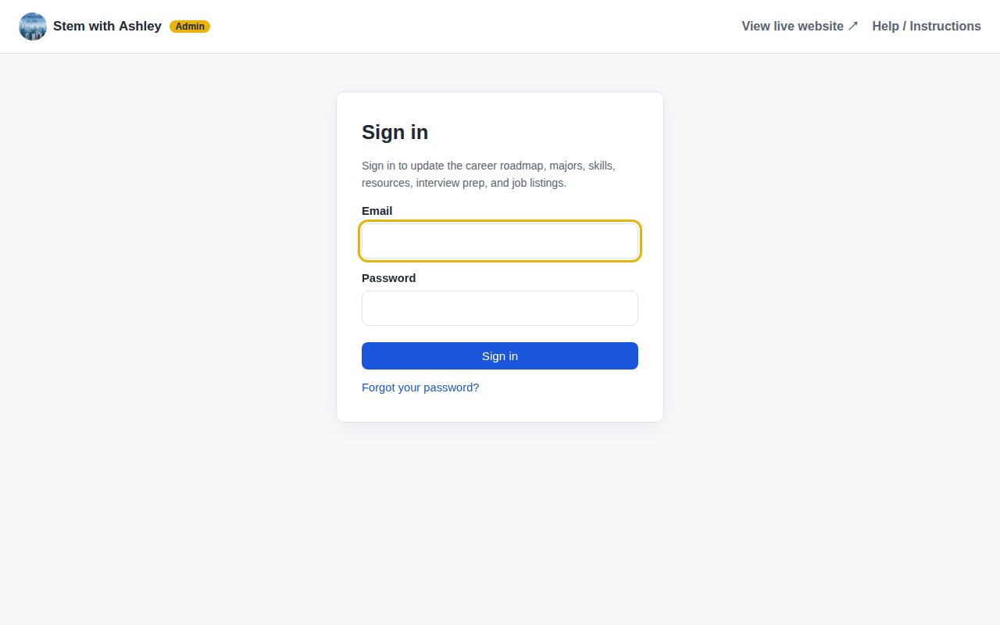
- Type your email address.
- Type your password.
- Click Sign in.
The first time only: Shikhar sends you a one-time setup link. Click it, choose a password (at least 10 characters; a short phrase you'll remember works well), and click Save password and continue. After that, use the sign-in page above. The setup link works once and expires, so if it doesn't work, ask Shikhar for a new one.
3. Reset your password
If you're signed in: go to Settings (left menu) → Change your password, type the new password twice, and click Change password.
If you forgot it: on the sign-in page click Forgot your password?, type your email, and click Email me a reset link. Open the email and click the link, then choose a new password. If no email arrives within 10 minutes (check spam too), ask Shikhar. He can create a reset link for you from Settings → Team access.
4. The dashboard
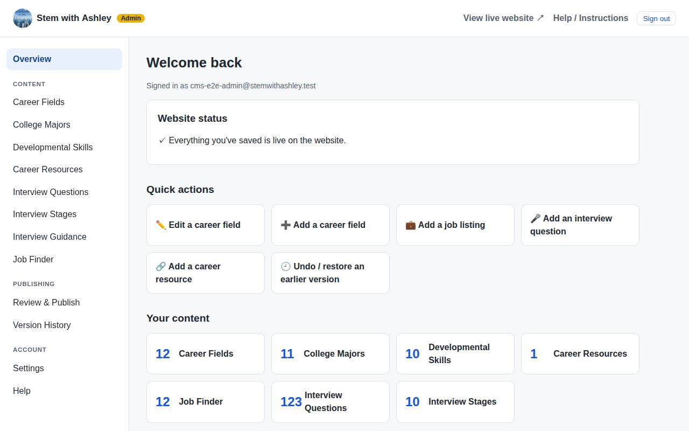
After you sign in, you see the Overview page:
- Website status: whether you have unpublished drafts.
- Quick actions: one-click shortcuts for common jobs.
- Your content: how many of each thing there are. Click a box to open it.
- The live website: links to every public app.
- Recently published: the latest updates.
The left-hand menu has every section. (On a phone, tap ☰ Menu first.)
At the top right you'll always see View live website, Help / Instructions, and Sign out.
5. Find existing content
- Click a section in the left menu, such as Career Fields.
- You'll see a list. Type in the Search box to filter it. For example, type "civil" to find Civil Engineering.
- Click the item's name (or Edit) to open it.
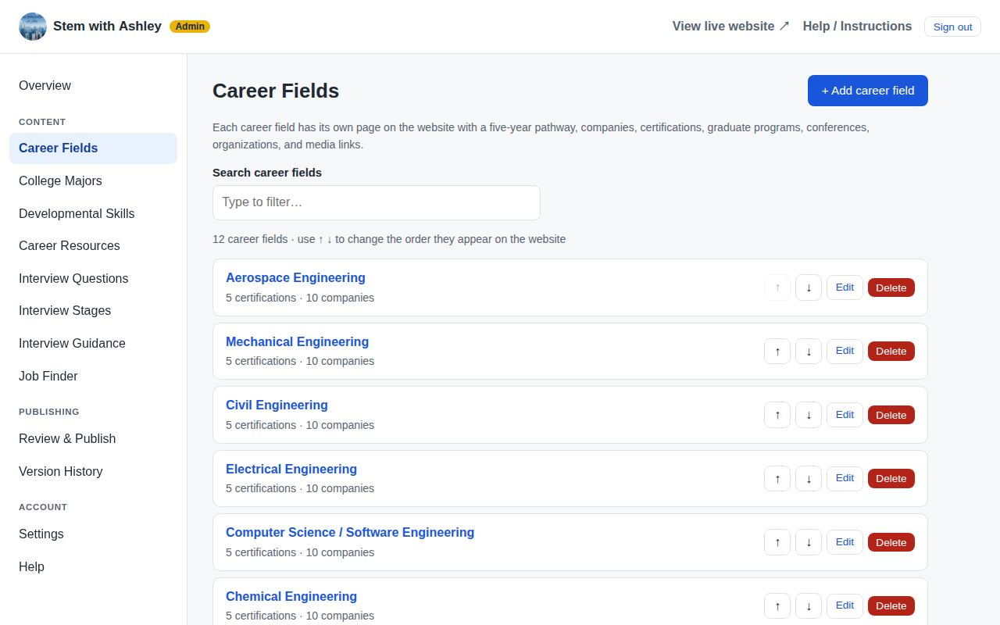
Labels in the list tell you what's happening:
- Edited — not published: you've changed it in a draft, but the website still shows the old version.
- New — not published: you added it, but it isn't on the website yet.
6. Edit a career field
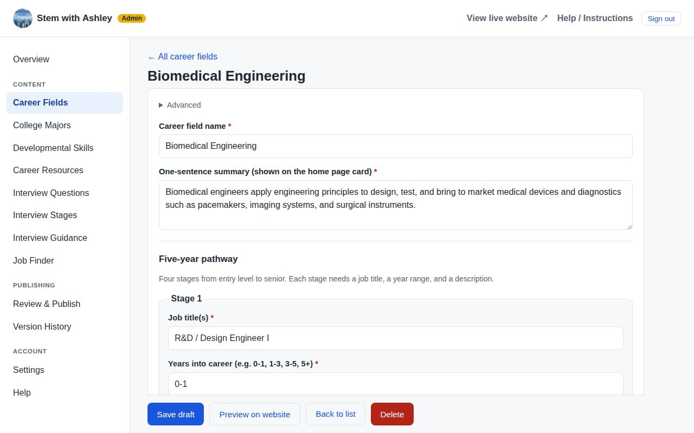
- Go to Career Fields and click the field.
- Change any box: the name, the one-sentence summary, and so on. Boxes marked * are required.
- Click Save draft at the bottom.
You'll see "Draft saved". Your change is stored safely but isn't on the website yet.
7. Create a new career field
- Go to Career Fields and click + Add career field (top right).
- Fill in the name and summary.
- Fill in all four pathway stages (see the next step).
- Add companies, certifications, graduate programs, conferences, organizations, and YouTube/podcast links as you like.
- Click Save draft.
The website address for the new field is created automatically from its name.
8. Change the five-year pathway

Every career field has exactly four stages, from entry level to senior. For each stage, fill in:
- Job title(s), e.g. "Design Engineer I / Associate Engineer"
- Years into career, e.g.
0-1,1-3,3-5,5+ - What this stage looks like: a sentence or two
9. Edit certifications and web links
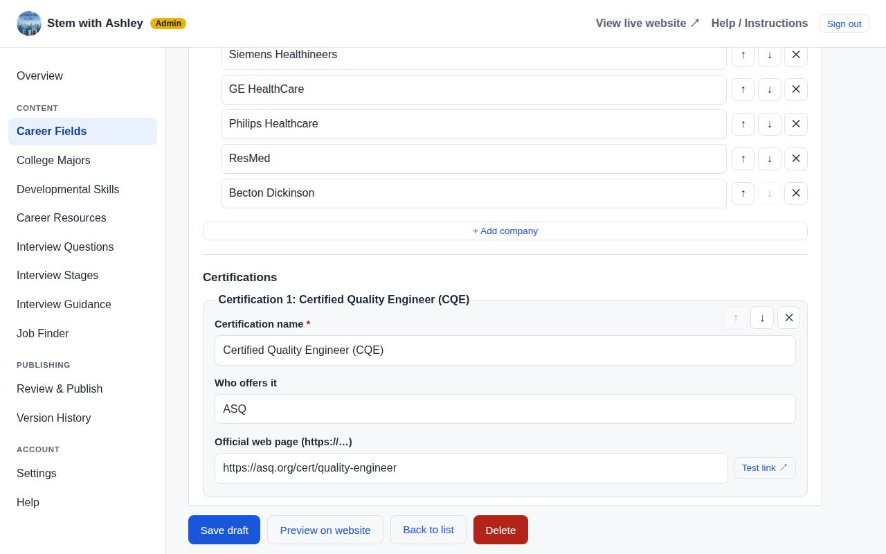
- To change one, edit its boxes.
- To add one, click + Add certification, then fill in the name, who offers it, and its official web page.
- To remove one, click the ✕ next to it.
- To reorder, use the ↑ ↓ arrows.
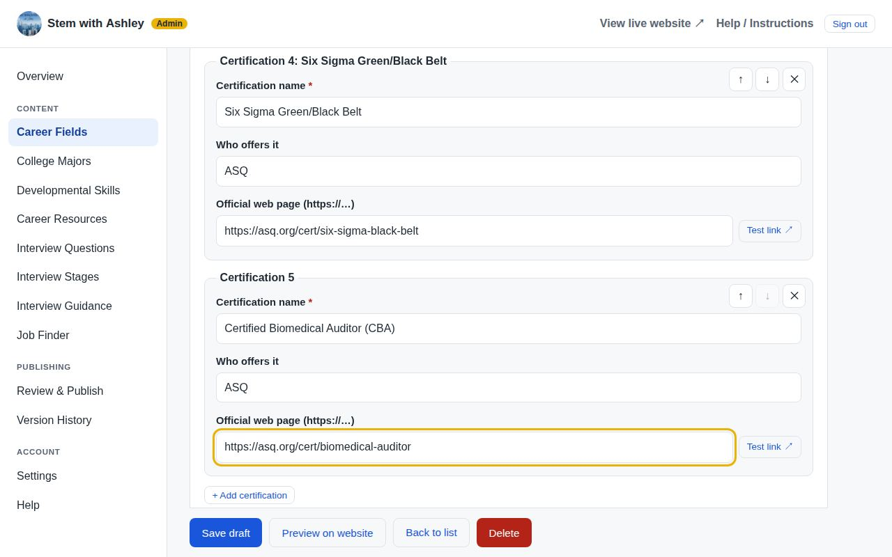
Web addresses must start with https://. The easiest way is to open the page in your browser, copy the address from the address bar, and paste it in. A Test link ↗ button appears so you can check it opens the right page.
Companies, conferences, organizations, and schools work the same way: each one is its own line with + Add, ✕, and ↑ ↓.
10. Edit majors
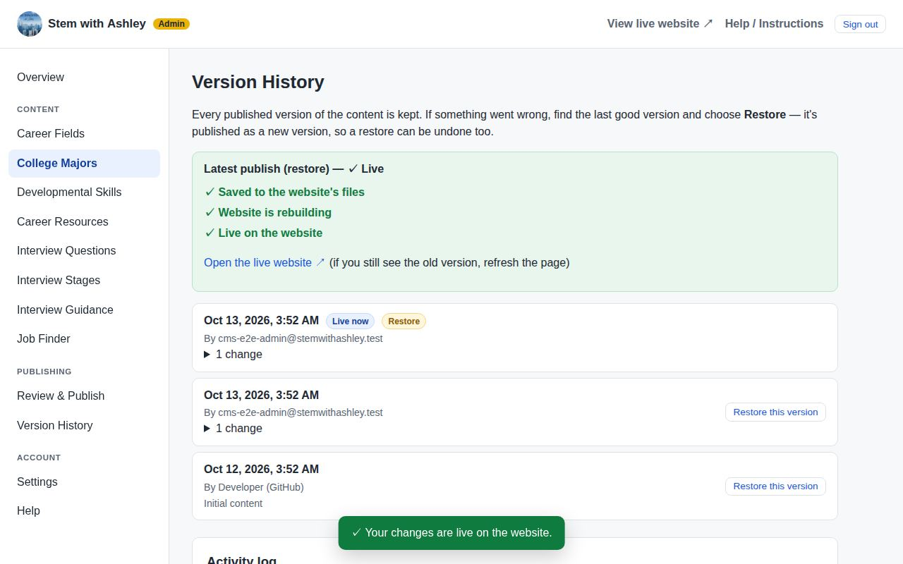
Go to College Majors. Each major has a name, a summary, typical courses (one per line), why students choose it, and the career fields it leads to. Tick the boxes for those fields. Every major must link to at least one career field.
11. Update career resources
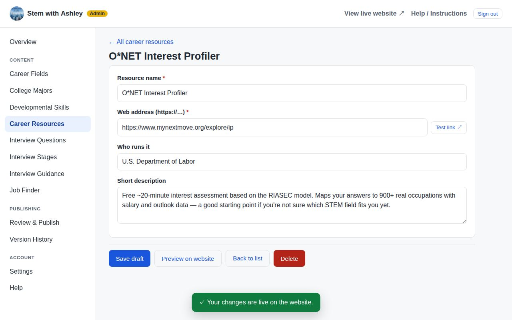
Go to Career Resources. Each resource needs a name and a web address, plus optionally who runs it and a short description. These appear on the website's Resources page.
12. Add or edit developmental skills
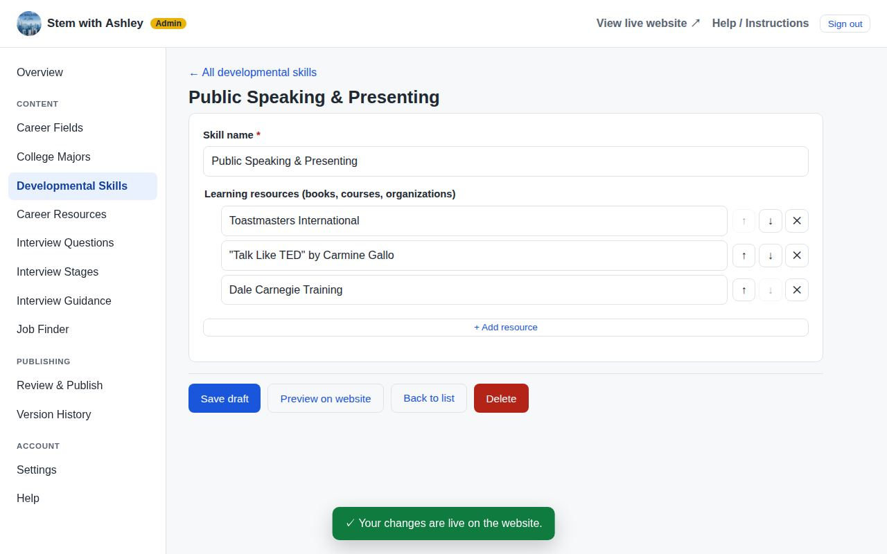
Go to Developmental Skills. Each skill has a name and a list of learning resources (books, courses, organizations), one per line.
13. Update interview questions
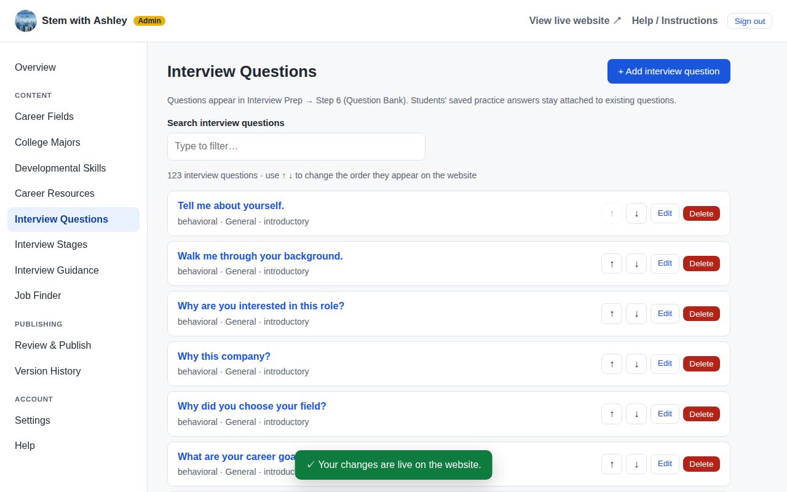
Go to Interview Questions. Each question has a category (Behavioral, Situational, or Technical), a topic, a difficulty level, what it evaluates, a tip, and search tags.
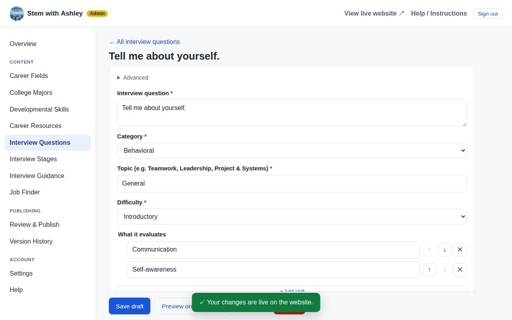
- Editing an existing question is safe. Students' saved practice answers stay attached to it.
- Deleting a question removes it for everyone, including any practice answers students saved for it.
Also in this area:
- Interview Stages: the stages listed in Interview Prep, Step 2.
- Interview Guidance: the STAR "why it works" and "common mistakes" lists, the situational framework, the before/during/after checklists, and the questions students can ask the interviewer.
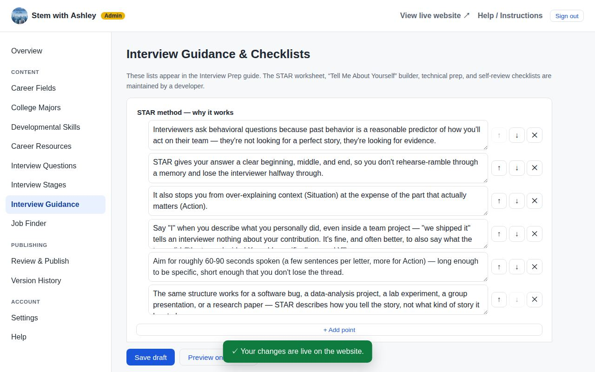
Tip: students' checklist ticks are saved by position. If you insert an item in the middle of a checklist, a student's existing ticks may shift by one. Adding new items at the end avoids that.
14. Add or edit job listings
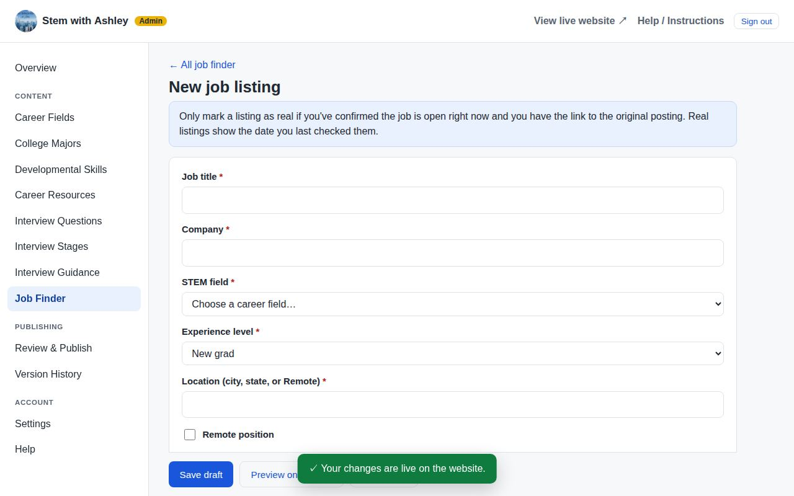
Go to Job Finder and click + Add job listing (or click an existing one). Fill in the title, company, STEM field, experience level, location, remote or not, and a one-sentence description.
Sample or real?
- Leave "This is a SAMPLE listing" ticked for examples. The website shows them with a grey Sample listing label.
- Untick it only for a real job you've confirmed is open right now. Then paste the link to the real job posting and the date you last checked it. The website shows a green Real listing label and a "View the original posting" link.
- When a real job closes, delete it or tick "sample" again.
15. Save drafts
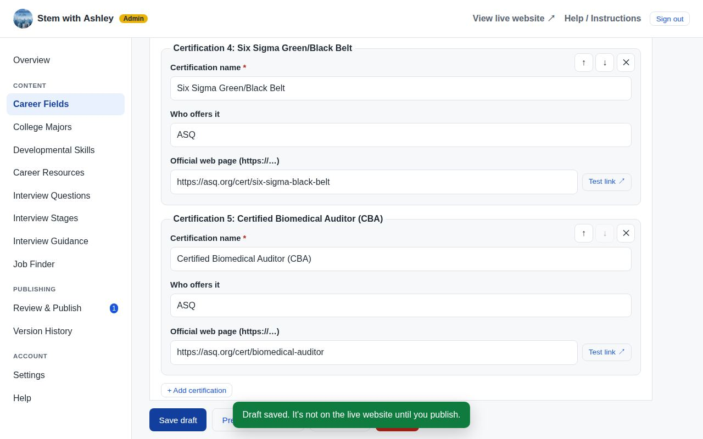
Click Save draft whenever you've made changes. Drafts are:
- Private: the public website doesn't change.
- Safe: they're kept even if you close the browser, sign out, or switch computers.
- Forgiving: you can save an unfinished draft. Anything that must be fixed before publishing is highlighted in red.
If you try to leave a page with changes you haven't saved, the dashboard asks whether to Save draft, Discard changes, or Keep editing.
A yellow bar at the bottom of the screen reminds you when you have unpublished changes.
16. Preview your changes
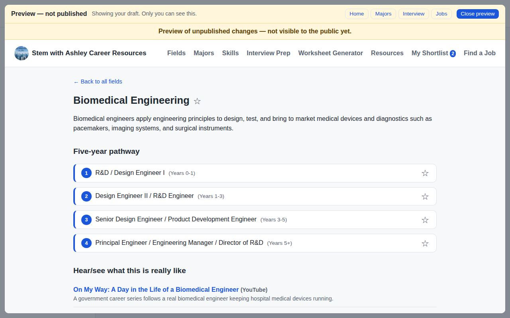
Click Preview on website at the bottom of any editing page. You'll see the real website with your changes, inside a frame with a yellow "Preview — not published" banner. Use the Home / Majors / Interview / Jobs buttons to look around. Click Close preview when you're done.
Only you can see the preview.
17. Publish your changes
- Click Review & Publish in the left menu (or the button on the yellow bar).
- Check the list of changes. Each one is marked added, edited, removed, or reordered.
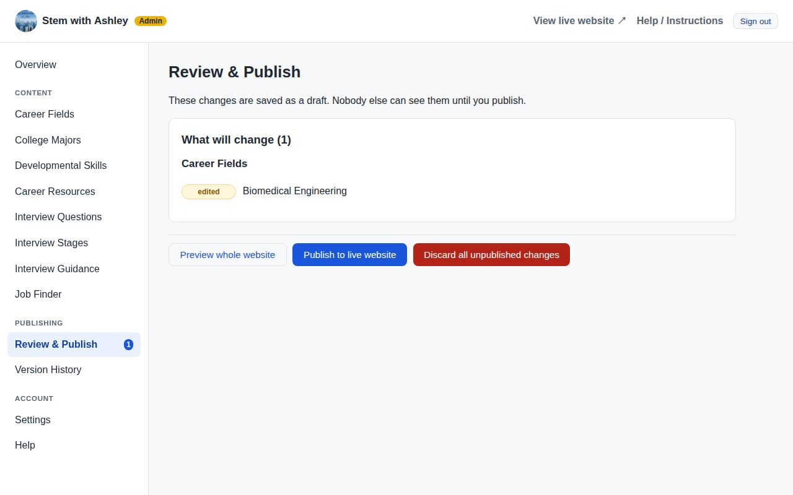
- If anything needs fixing, a red box lists it. Click a problem to jump straight to it.
- Click Publish to live website, then Publish now to confirm.
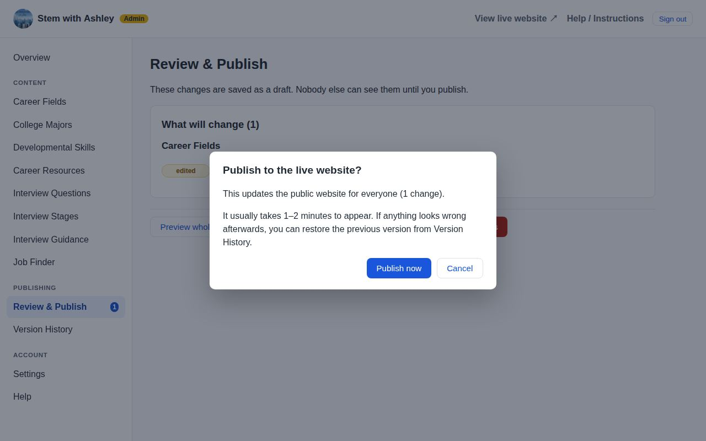
- Watch the progress box. It shows ✓ Saved to the website's files, then ✓ Website is rebuilding, then ✓ Live on the website. This usually takes 1–2 minutes. You can leave the page while it works.
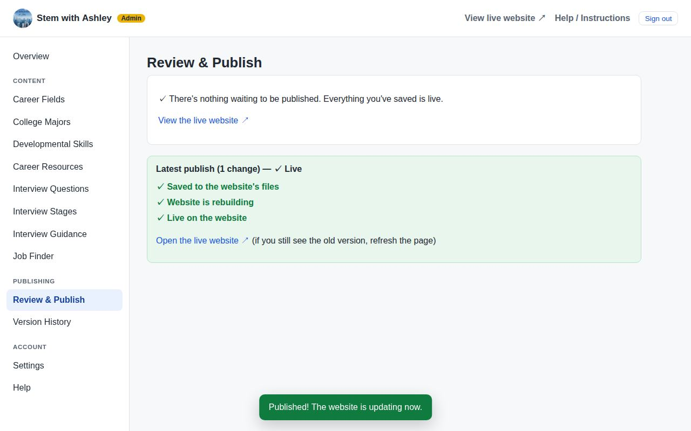
18. Check your changes on the public website
When you see ✓ Live, click Open the live website. If you still see the old version, refresh the page (press F5, or pull down on a phone). Browsers sometimes show a saved copy for a moment.
19. Restore an earlier version (undo)
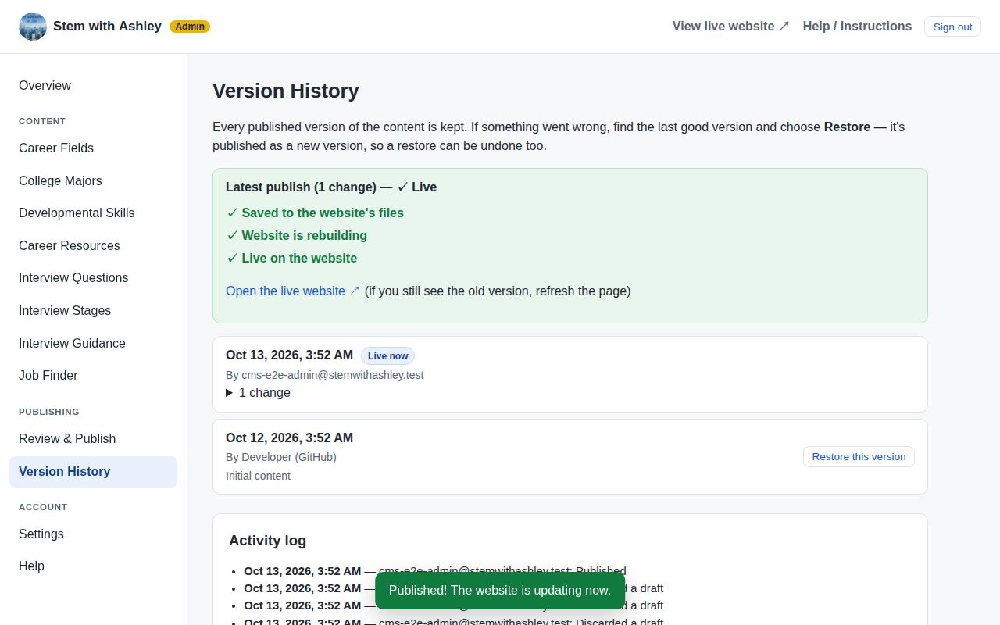
- Click Version History in the left menu.
- Each entry shows when it was published and who published it. Click "N changes" to see what changed.
- Find the last version that was right and click Restore this version.
- Read the message and click Restore and publish.
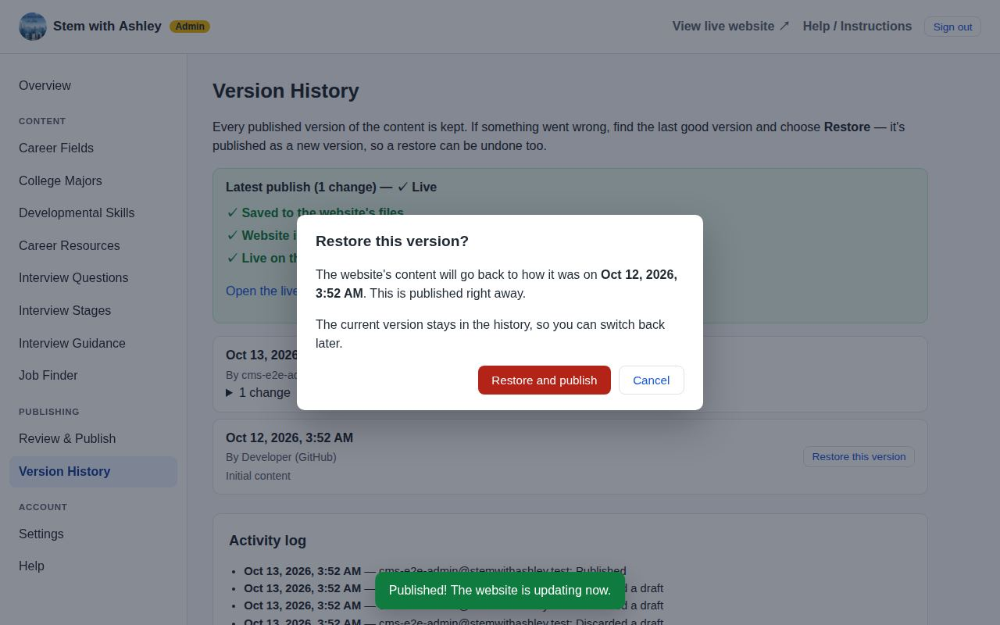
The website goes back to that version in 1–2 minutes. Restoring doesn't erase anything. The version you replaced stays in the history, so you can switch back again if you change your mind.
Restoring throws away any unpublished drafts, and the dashboard warns you first.
The Activity log at the bottom shows every publish, restore, and deletion, plus anything that failed.
20. Sign out
Click Sign out at the top right. For safety, the dashboard also signs you out after 30 minutes without activity. It warns you 5 minutes before, and saves any unsaved edits as a draft first.
21. When publishing doesn't work
Don't worry. Nothing on the website breaks when publishing fails. The old version simply stays up, and your drafts are kept.
| What you see | What it means | What to do |
|---|---|---|
| Red box: "must be fixed before publishing" | Something is missing or not in the right format | Click each problem, fix it, Save draft, then publish again |
| "The live website changed while you were editing" | Someone else (or Shikhar) updated the same content | Keep my version publishes yours; Start over loads the newest version. If unsure, choose Cancel and ask Shikhar |
| "Someone else published a change at the same moment" | Two publishes collided | Wait a minute and click Publish again |
| "Publishing isn't connected" / "publishing access has expired" | A setting on Shikhar's side needs renewing | Your drafts are safe. Contact Shikhar |
| Progress says Failed | The website couldn't rebuild | The old version is still showing. Contact Shikhar |
| "Taking longer than usual" | Website rebuilds are slow right now | Check back in a few minutes |
| "Your session has expired" | You were signed out | Sign in again. Your drafts are still there |
22. What needs a developer (Shikhar)
The dashboard covers all everyday content. Ask Shikhar for:
- Changing page layouts, colors, fonts, or the logo
- New kinds of content or new pages/apps
- The STAR worksheet, "Tell Me About Yourself" builder, technical-prep notes, self-review checklists, or the STAR example story
- How the Worksheet Generator creates questions
- Connecting a live job-listings feed
- Adding or removing people's dashboard access (if you don't have the Administrator role)
- Anything the dashboard says to "ask Shikhar" about
Inviting a helper (Administrators only)
Settings → Team access → Invite someone creates a one-time sign-in link for a new person. Choose Editor (can edit content) or Administrator (can also manage who has access). Send them the link yourself. Never send anyone a password. To remove someone's access, change their role to No access.
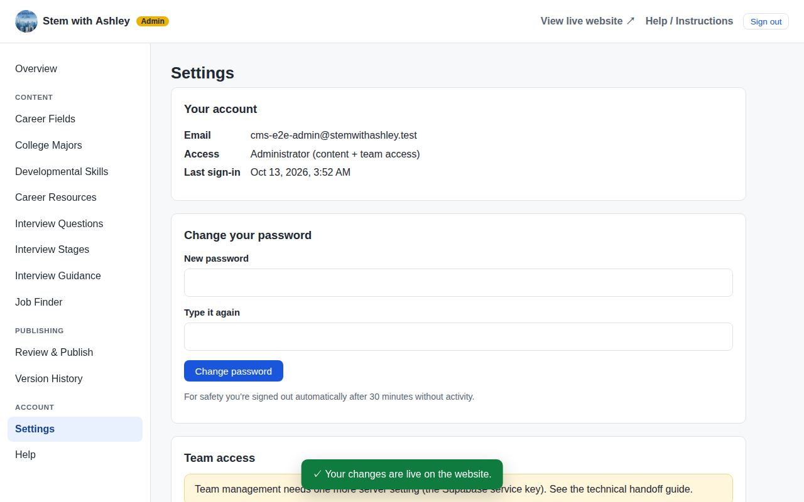
How to Use the STEM with Ashley Apps
A guide to every app on the website: what it's for and how to use it.
Website: https://stem-with-ashley.vercel.app
Anyone can use the website. No account or sign-in is needed. The menu at the top of every page leads to each app: Fields · Majors · Skills · Interview Prep · Worksheet Generator · Resources · My Shortlist · Find a Job.
Privacy: anything a visitor saves (bookmarks, interview practice answers, checklist ticks, worksheet notes) stays in their own browser on their own device. It is never uploaded, and nobody else (including you) can see it. Practice videos are never saved anywhere. They disappear when you leave the page. Saved items also don't follow someone to another computer or browser.
1. STEM Career Roadmap (home page)
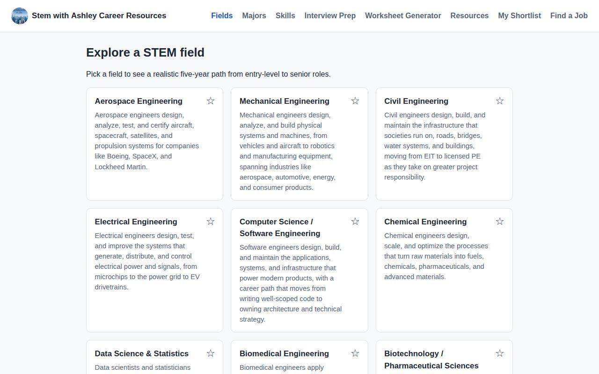
Purpose: show recent STEM graduates a realistic five-year career path in 12 fields, from engineering to health sciences and project management.
Where: the home page, or Fields in the menu.
How to use it:
- Click any field card, e.g. Biomedical Engineering.
- Read the five-year pathway: four stages from entry level (years 0–1) to senior/leadership (5+), each with typical job titles and what the work involves.
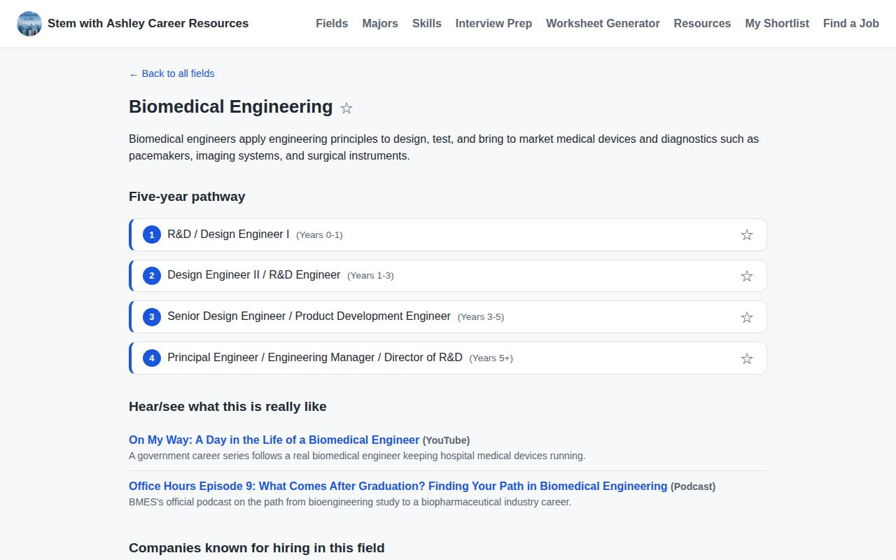
- Scroll down for "Hear/see what this is really like" (YouTube and podcast picks), companies that hire, certifications (each name links to the official provider page), graduate programs and schools, conferences, and professional organizations.
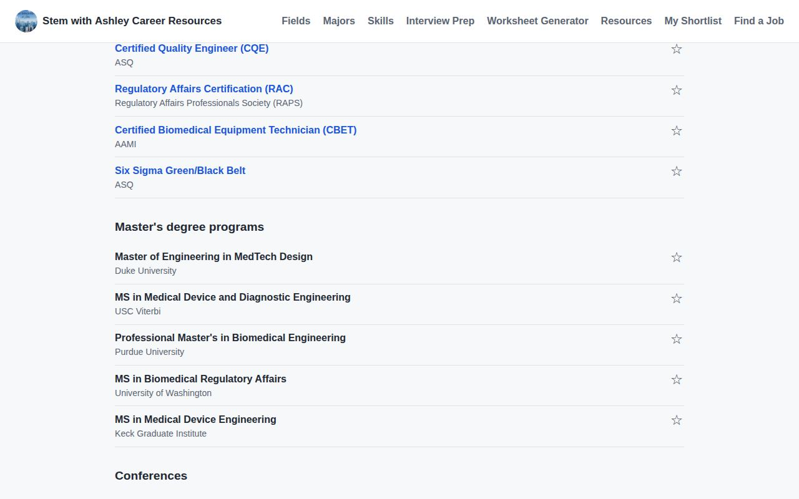
- Click the ☆ star next to anything to save it to My Shortlist.
Limitations: pathways are typical examples, not guarantees. Titles and timing vary by company. Always check certification details on the provider's site.
2. College Majors Explorer
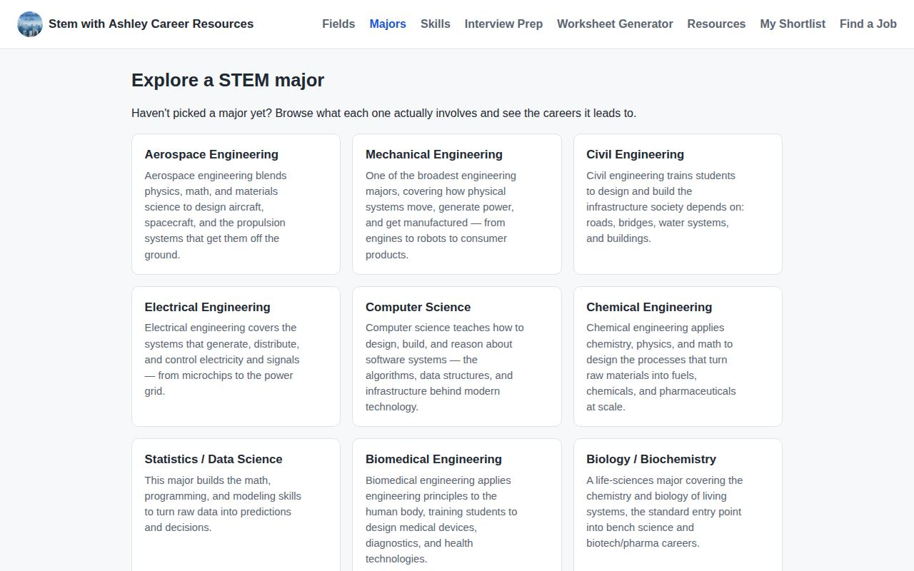
Purpose: help students who are still choosing a major see what each one involves and which careers it leads to.
Where: Majors in the menu.
How to use it: click a major to see a summary, typical courses, why students choose it, and links to the career fields it leads to. Click a field to jump to its roadmap.
3. Developmental Skills
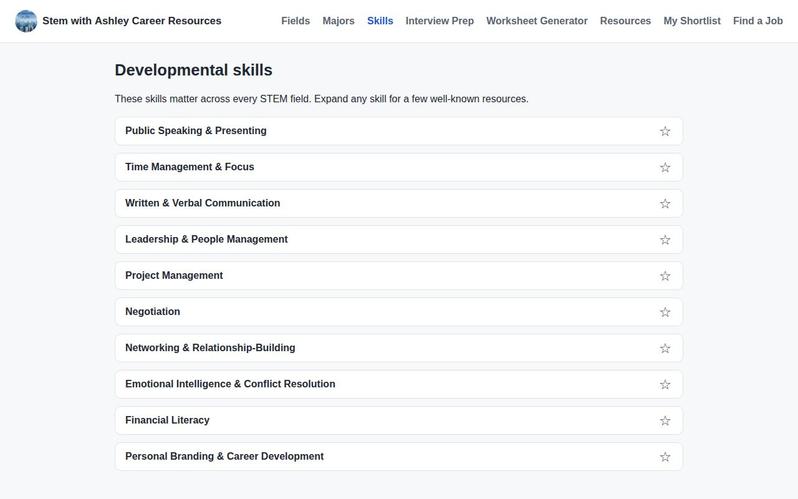
Purpose: the non-technical skills every STEM career needs (public speaking, leadership, and more), each with recommended books, courses, and organizations.
Where: Skills in the menu. Click a skill to expand its resources. Star a skill to save it.
4. Interview Preparation
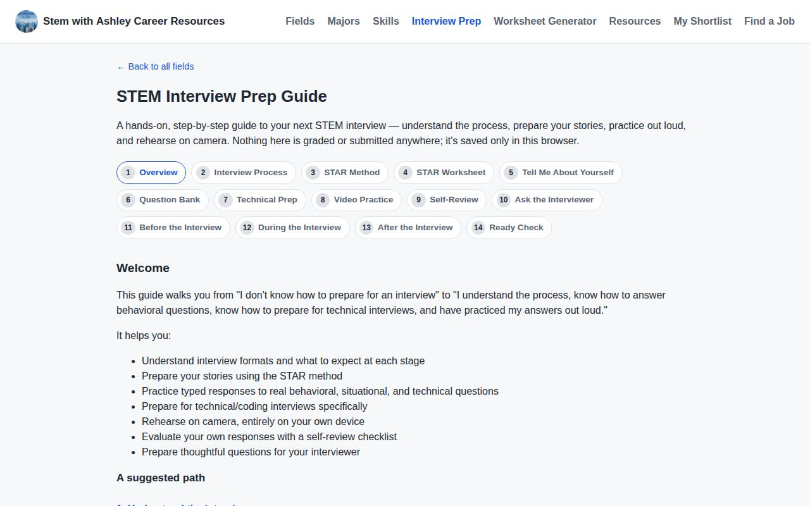
Purpose: a 14-step guide that takes a student from "what happens in an interview" to a ready-check before the real thing.
Where: Interview Prep in the menu. Use Next / Back at the bottom of each step, or the step list at the top.
| Step | What it covers |
|---|---|
| 1 Welcome | How the guide works |
| 2 The Interview Process | The typical stages: recruiter screen, behavioral, technical, and more |
| 3 The STAR Method | Situation, Task, Action, Result: why it works, common mistakes, an example |
| 4 STAR Worksheet | Build your own STAR answers in guided boxes |
| 5 "Tell Me About Yourself" | Present → Past → Future builder |
| 6 Question Bank | 120+ questions with tips. Search, filter by category/difficulty, mark favorites and "practiced" |
| 7 Technical Prep | What to expect in coding/technical interviews by role |
| 8 Video Practice | Record yourself answering (camera + microphone) |
| 9 Self-Review | Checklists to judge your own answers |
| 10 Questions to Ask | Good questions for the interviewer |
| 11–13 Before / During / After | Checklists for each part of interview day |
| 14 Ready Check | A summary of what you've completed |
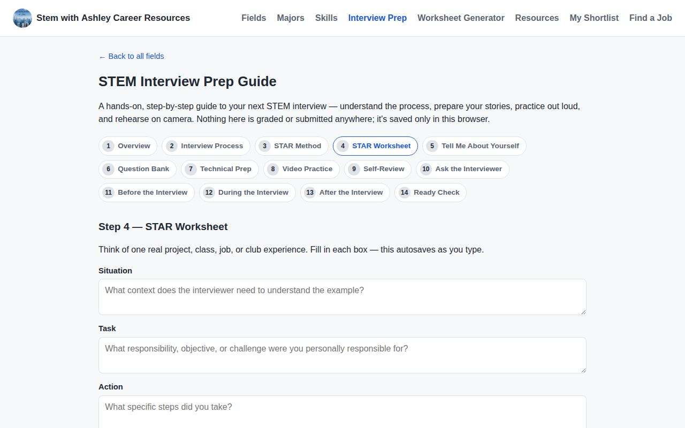
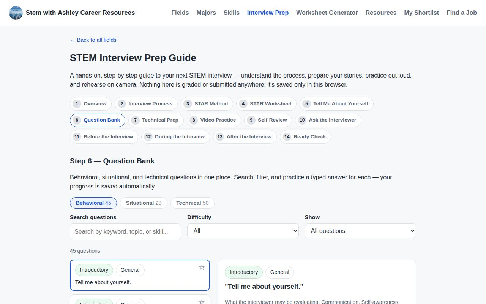
Video practice: the browser asks for camera and microphone permission. The video is played back only on that device and is deleted when you leave the step. Nothing is uploaded. If recording isn't supported (some older browsers), the page says so.
Where progress is stored: answers, favorites, and checklist ticks are saved in the student's own browser.
5. Worksheet Generator
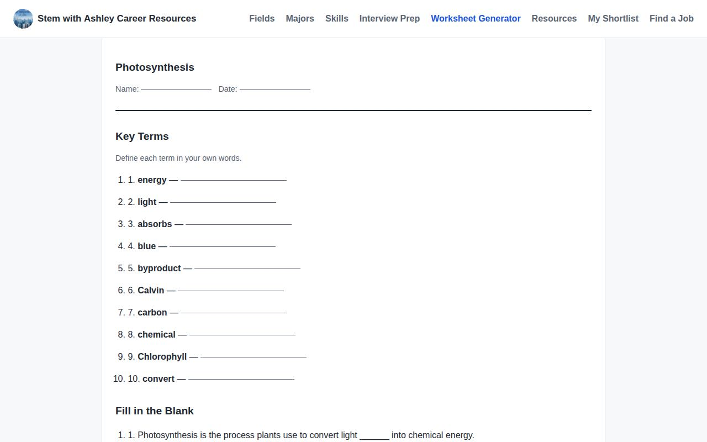
Purpose: turn class notes into a printable practice worksheet with an answer key.
Where: Worksheet Generator in the menu.
How to use it:
- Type a title (e.g. "Photosynthesis").
- Paste notes or a lesson summary. A few full sentences work best.
- Choose the number of questions (4–15) and the difficulty.
- Click Generate Worksheet.
- Tick Show answer key if you want answers, then Print Worksheet (or save as PDF from the print window).
Limitations: questions are built from the sentences you paste, using simple rules (no AI). Review them before giving them to students. Notes stay in the browser.
6. Resources
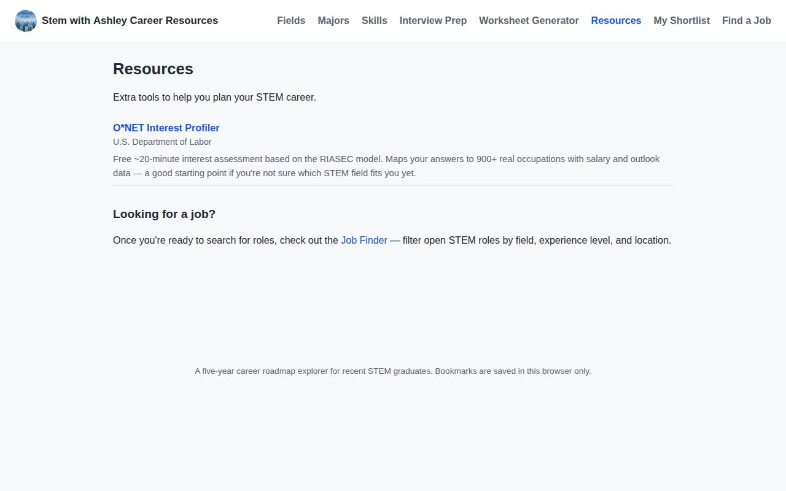
Purpose: trusted career-exploration websites (for example, the O*NET Interest Profiler) with short descriptions. Where: Resources in the menu.
7. Job Finder
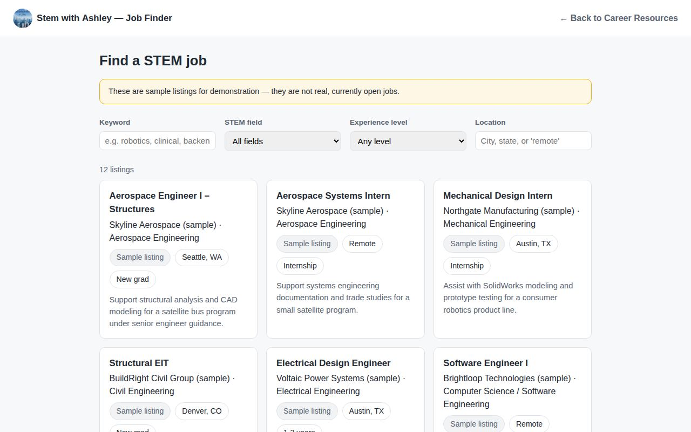
Purpose: search early-career STEM jobs by keyword, field, experience level, and location.
Where: Find a Job in the menu.
How to use it: type a keyword or choose filters. The list updates as you type.
Sample vs. real listings:
- Sample listing (grey label): an illustrative example, not a real job. Company names include "(sample)".
- Real listing (green label): includes View the original posting and the date it was last checked. Always confirm on the employer's site before applying.
Limitation: this is not a live job feed. Listings are added by hand in the admin dashboard.
8. My Shortlist
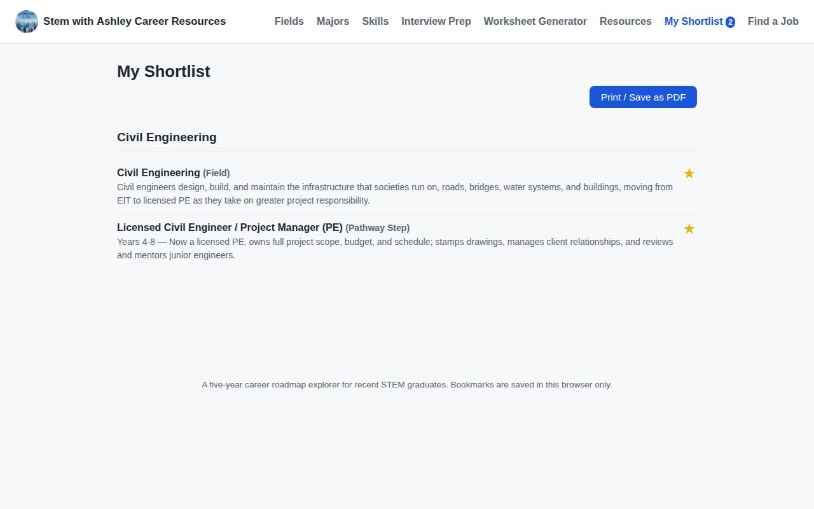
Purpose: collect everything a student starred (fields, pathway stages, certifications, skills, and more) to bring to a career-coaching conversation.
Where: My Shortlist in the menu. The number badge shows how many items are saved.
How to use it: click Print / Save as PDF to print or save it. Click a star again to remove an item.
Limitation: the shortlist is saved in that browser on that device only. Clearing browsing data removes it.